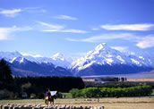
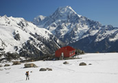

Aoraki / Mt Cook
Mount Cook National Park is a captivating, yet harsh land of snow, ice and rock. There are 19 peaks over 3,000 metres in the park, including New Zealand's tallest mountain Aoraki Mount Cook which stands at an altitude of 3,754 metres above sea level.
The area provides the visitor fantastic alpine views with many walks that take you to within touching distance of both the Hooker and Tasman Glaciers. Of the many walks in the area, Kea Point is easy to reach and well worth the 1 hr return trip. It starts at the Hooker Valley camping ground and takes you to a lookout area offering magnificent views of the Mueller Glacier and Mt Cook on a fine day.
For the more adventurous, we recommend walking to (and staying at) the Mueller Hut, a challenging 3-4 hour climb that will reward you with breath-taking views of the southern alps. For keen Naturalists, the park offers a wide variety of flowering native plants and unique insect / bird life. The "Cheeky" Kea (Mountain Parrot) is a frequent visitor and keeps the locals entertained with it's playfull, inquisitive nature.